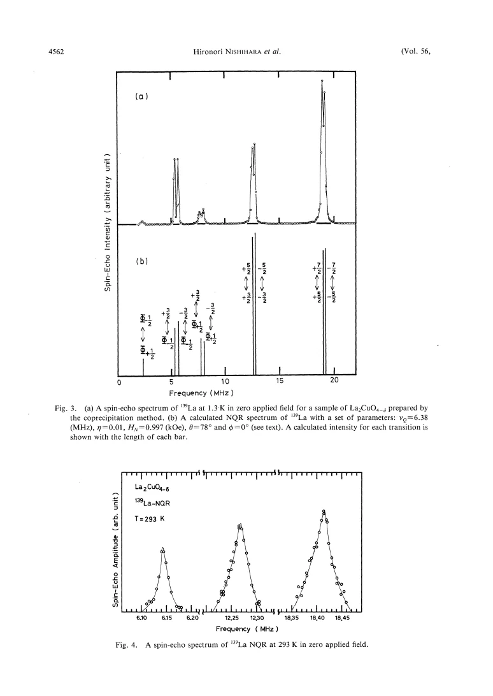
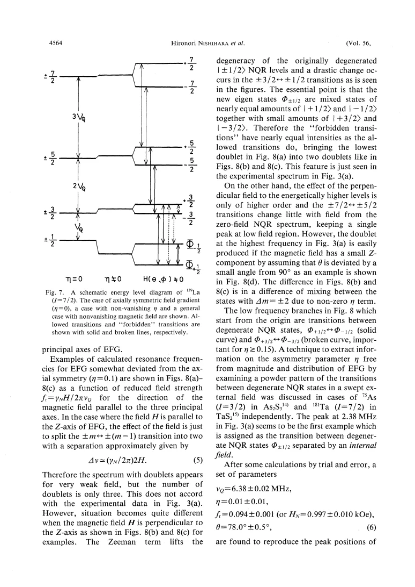
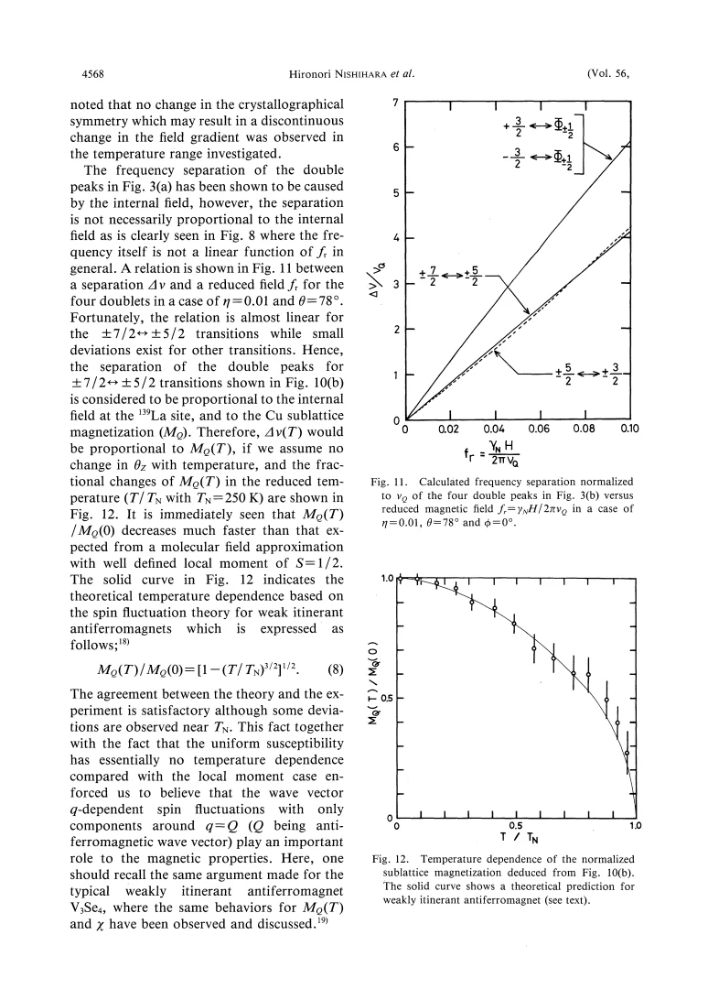

experiment · Nishihara · supplied source 1987
NQR and NMR of ¹³⁹La in Antiferromagnetic La₂CuO₄₋δ
A single La site with quadrupole coupling and a small internal magnetic field explains the complex low-temperature spectrum.
The question: Can the many low-temperature La resonance lines be understood without inventing multiple inequivalent La sites?
Before you start: the few terms you need
- EFG: electric field gradient that couples to the nuclear quadrupole moment
- Zeeman term: magnetic-field coupling to nuclear spin
- I = 7/2: eight nuclear spin states for ¹³⁹La
See → explain → test
Understand it in four pictures.
Picture 1 / 4
Start with the simple spectrum
Look for: At 293 K, three quadrupole transition groups arise from one almost axially symmetric La site.
Swipe across the picture to read every label, or enlarge it below.
- One La site
- Three NQR transitions
Teaching level-group summary, not a computed I = 7/2 spectrum.
The paramagnetic spectrum supplies the structural baseline.
Picture 2 / 4
Add the antiferromagnetic field
Look for: An internal magnetic field splits and mixes nuclear states even when the applied field is zero.
Swipe across the picture to read every label, or enlarge it below.
- Quadrupole levels
- Add internal field
- Split and mix states
- More transitions
Teaching mechanism; quantitative line positions require diagonalizing the eight-state Hamiltonian.
More resonance lines need not mean more crystallographic sites.
Check the original: PDF p. 3 · PDF p. 4 · PDF p. 6 · PDF p. 7
Picture 3 / 4
Check with high-field NMR
Look for: The same parameter set must reproduce singularities in the powder NMR spectrum.
Swipe across the picture to read every label, or enlarge it below.
- Zero-field line fit
- Same EFG and H_N
- Powder NMR check
Teaching cross-check; intensity agreement is qualitative and powder orientation is imperfect.
Agreement across zero-field and applied-field spectra makes the single-site model stronger.
Picture 4 / 4
Follow magnetic order separately from EFG
Look for: The doublet separation vanishes near 250 K while the quadrupole scale varies smoothly.
Swipe across the picture to read every label, or enlarge it below.
- Average frequency
- Doublet separation
Teaching distinction; only the selected highest-frequency transition is nearly linear in internal field.
Magnetic splitting and structural frequency shifts carry different information.
Predict before revealing
If one La site develops several additional lines below T_N, what should be tested first?
Choose an answer, then compare the reasoning.
Antiferromagnetic internal fields split and mix the same site's nuclear states. The zero-field and high-field spectra provide a joint test.
Read the answer
A combined quadrupole and internal-field Hamiltonian Antiferromagnetic internal fields split and mix the same site's nuclear states. The zero-field and high-field spectra provide a joint test.
Go deeper Follow the full argument
The puzzle and the sample
Nishihara and colleagues studied an oxygen-deficient La₂CuO₄₋δ powder with ¹³⁹La NQR and high-field NMR from 1.3 K to room temperature. At low temperature, a complicated collection of doublets and a single lower-frequency feature had previously encouraged explanations involving multiple La sites. The authors first establish a simpler baseline: at 293 K the three main transition groups are consistent with one La site and an almost axial electric field gradient. The sample's susceptibility anomaly and disappearance of magnetic splitting identify its Néel temperature near 250 K. This is a property of the supplied oxygen-sensitive sample, not a universal Néel temperature for all La₂CuO₄. The oxygen-deficient powder was prepared by a coprecipitation route. The susceptibility maximum and magnetic splitting do not give exactly the same operational temperature, so their near agreement should not conceal the definitions. Comparing this specimen with stoichiometric crystals requires attention to oxygen and preparation history. Those materials differences can change the ordering scale without invalidating the single-site resonance analysis.
Electric and magnetic interactions act together
The nuclear Hamiltonian is the sum of quadrupolar and Zeeman terms. For I = 7/2, eight states must be considered. In zero applied field, an antiferromagnetic internal field still provides a Zeeman term. When that field lies nearly perpendicular to the largest EFG principal axis, it mixes low-lying states strongly and permits transitions absent from the simplest axial quadrupole picture. The authors numerically diagonalize the Hamiltonian rather than assign every new line to a separate site. Their low-temperature fit gives ν_Q ≈ 6.38 MHz, η ≈ 0.01 and H_N ≈ 0.997 kOe, with the field approximately 78° from the EFG Z axis. The azimuthal angle is poorly constrained because η is so small.
A shared model must survive two spectra
The calculated line positions match the zero-field NQR spectrum. Relative intensities agree only qualitatively, an important qualification: some transitions change rapidly with the local field and are especially sensitive to distributions of internal fields and sample preparation. The high-field powder NMR pattern then provides another test. Its paired singularities can be understood using the same EFG and internal-field parameters. An apparent superposition of spectra does not require two sites. Small deviations from an ideal powder pattern may reflect preferential orientation. The strong applied-field experiment also leads the authors to infer a spin-flop field greater than their maximum applied field of 80 kOe, within their proposed interpretation.
From local field to spin structure
A point-charge EFG calculation places the principal axes slightly away from the crystallographic axes. Combining that geometry with the fitted internal-field direction supports a simple antiferromagnetic arrangement whose moments lie along the authors' a axis. Classical dipole-field sums help compare candidate structures, but they do not determine an absolute ordered Cu moment reliably. The moment inferred using a purely dipolar local field would disagree with neutron results; a transferred hyperfine contribution is proposed to account for the discrepancy. This is a valuable example of the difference between measuring a field at a nucleus and knowing the microscopic coupling that converts it into an electronic moment. The paper itself says the absolute sublattice moment cannot be extracted.
Temperature dependence and historical interpretation
The average of the highest-frequency doublet tracks ν_Q, which decreases smoothly with warming, plausibly because of anharmonic lattice vibrations. Its separation instead tracks H_N and approximately the ordered sublattice magnetization, provided the field orientation does not change substantially. The approximation is transition specific: Fig. 11 shows that not every doublet separation is linear in field. The normalized magnetic order decreases faster than a simple molecular-field S = 1/2 expectation. The authors compare it with a weak-itinerant-antiferromagnet spin-fluctuation expression and obtain satisfactory overall agreement with deviations near T_N. Preserve this as their 1987 interpretation, not a modern proof of itinerancy. This paper reports static resonance information; dynamic relaxation was explicitly deferred to later work.
Translate the mathematics Key equations and symbol meanings
ℋ = ℋ_Q − γ_nℏ H_N · I
Symbols: ℋ_Q: quadrupole Hamiltonian; γ_n: nuclear gyromagnetic ratio; H_N: internal field; I: nuclear spin operator.
Even zero applied field does not eliminate the magnetic interaction in an ordered antiferromagnet. The terms mix states and change allowed transitions.
η = (V_XX − V_YY)/V_ZZ
Symbols: V_ij: EFG tensor components in principal axes; Z denotes the largest-magnitude component.
Small η means a nearly axially symmetric EFG, not zero magnetic order.
M_Q(T)/M_Q(0) = [1 − (T/T_N)^(3/2)]^(1/2)
Symbols: M_Q: sublattice magnetization; T_N: sample Néel temperature.
Historical spin-fluctuation model used for the normalized temperature trend; it is not an absolute moment calibration.
Read the evidence A guided look at the original figures

Open the full original page ↗

Open the full original page ↗

Open the full original page ↗
What this paper does—and does not—establish
- All twelve supplied scanned pages read visually; no machine-readable text claimed.
- Oxygen stoichiometry affects T_N and local distributions; δ is not precisely determined here.
- Point-charge and dipolar models constrain orientation only imperfectly; absolute Cu moment is not obtained.
- Weak-itinerant model comparison is the supplied historical interpretation.
Explain it back.
Try answering aloud before opening the explanation.
What is measured directly: Cu moment or La local field?
The spectrum constrains the local field and EFG. Converting the field into an absolute Cu moment requires reliable hyperfine couplings.
Does ν_Q alone measure magnetic order?
No. Its temperature shift primarily follows the EFG; selected doublet splitting carries the magnetic information.
Does this paper measure T₁?
Its reported analysis concerns the static spectra and ordered fields. Relaxation dynamics are deferred.
Connect the next paper.
Source version, reading coverage and preservation
All 12 scanned PDF pages rendered and read visually, including equations and figures
Reviewed body pages: 1, 2, 3, 4, 5, 6, 7, 8, 9, 10, 11. Reference list inspected; cited works not independently reviewed.
Original file retained byte for byte. SHA-256: fb101415842b427299d33068acd2feaa70e24d211bcf51e1dda775f751fa33dd
Filename: JPSJ - Nishihara - La NQR and NMR in antiferromagnetic La2CuO4 - 1987.pdf.